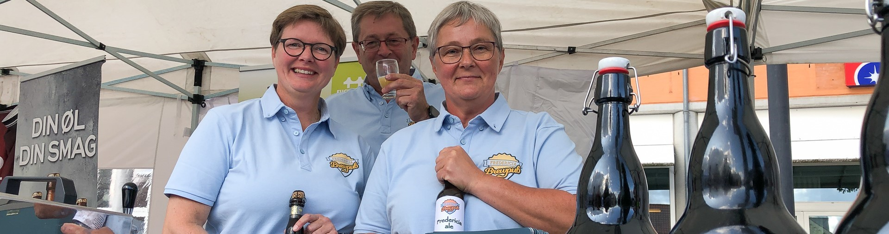
Historien om Fredericia Brewpub
Ølbrygning er en fantastisk hobby, som mange kaster sig over. De fleste håndbryggere lever med en stille drøm om,
at kunne sælge sit øl og måske gøre det til en levevej. Der er forholdsvis få håndbryggere, der går linen ud og det er med god grund,
for det er meget svært at tjene penge på at sælge øl.
I Fredericia er vi 2 håndbryggere, der hver for sig har drømmen om at starte et bryghus. Her kan du læse historien om Fredericia Brewpub:
Ideen fødes:
De første planer om at etablere Fredericia Brewpub kommer til verden d. 6. Juni 2019.
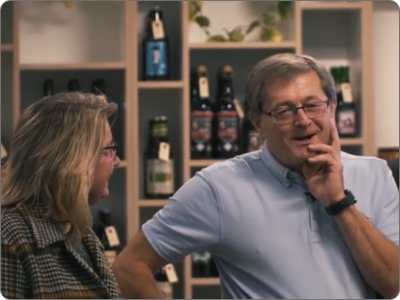
En partner dukker op:
Under en Pubcrawl med Ølentusiasterne i Fredericia hører Dorte om mine planer. Hun går med tilsvarende planer, og vi bliver enige om, at vi begge skyder penge i projektet.
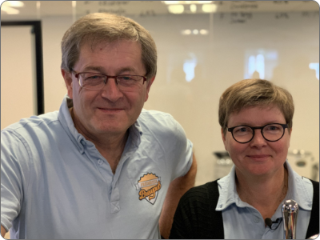
Forretningens navn:
Egentligt ville vi gerne hedde Fredericia Bryghus, men der følger en lidt kedelig historie med navnet. Vi beslutter i stedet at kalde vores forretning Fredericia Brewpub.
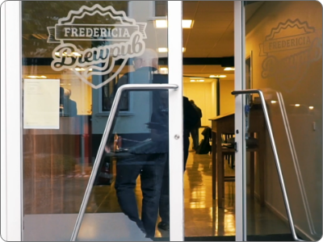
Logo:
Jeg synes selv, at jeg er verdensmester i det med grafik og logoer. Alligevel tager vi kontakt til en marketingmand. Han laver et fornemt logo, som vi straks bliver forelskede i.
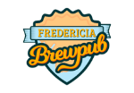
Tilladelser & godkendelser:
Der er meget at holde styr på. Vi skal have tilladelse til at brygge øl, byggetilladelse, spildevandstilladelse. Vi skal have styr på anmeldelse til CVR, erhvervsstyrelsen, moms & skat, og vigtigst af alt - alkoholbevillingen.
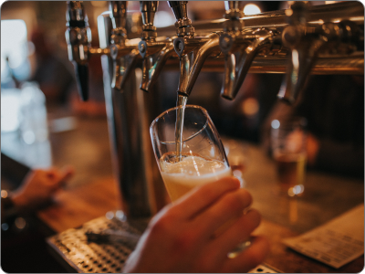
Øllets dag:
D. 7. september 2019 var øllets dag i Fredericia og vores store chance for at fortælle byen om vores planer.
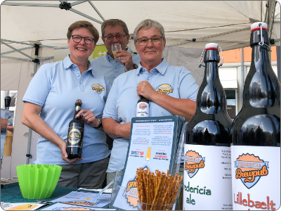
Crowdfunding:
Vi har oprettet et crowdfunding projekt hos Coop. På øllets dag og flere uger efter fortsætter indbetalingerne til crowdfunding. Vores mål er at nå 80.000,-. Inden september er omme når vi over 140.000,-.
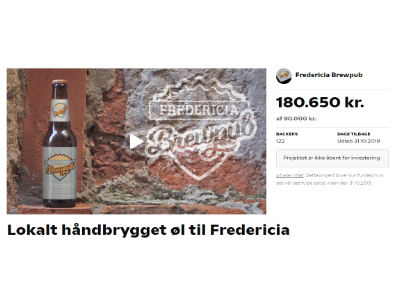
Indkøb af bryganlæg:
Der findes en del forskellige mærker inden for bryggeriudstyr, men da Dorte og jeg begge selv har Braumeister, vælger vi at investere i en 200 liters derfra.
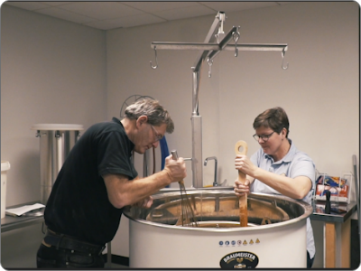
Aftaler med bryggerier:
Min yndlingsøl er fra Het Anker, så jeg vil selvfølgelig gerne have deres øl ind. Det lykkedes, og vi er de eneste i hele Danmark, der har denne øl.
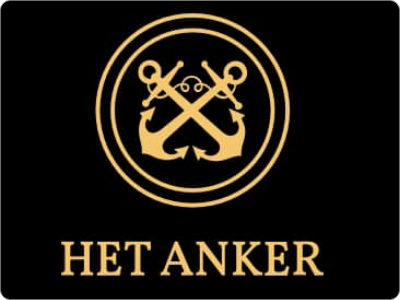
Åbning:
Efter hektiske dage med valg af lokale og renovering, er vi endelig klar til at åbne torsdag d. 31. oktober kl 11.
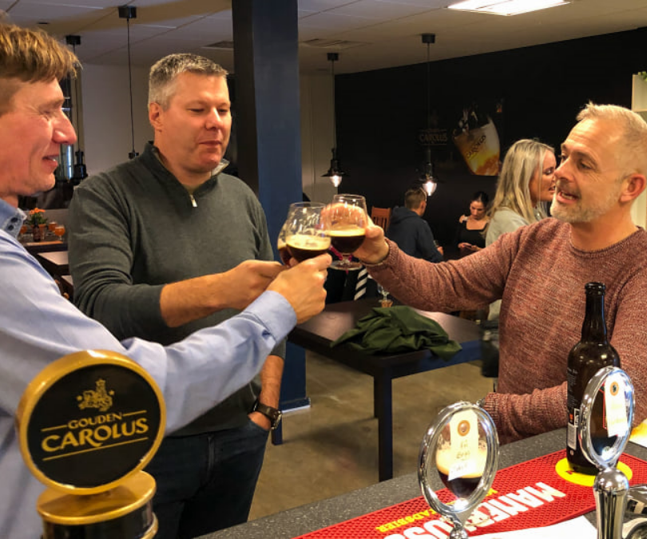
Ølmærke:
Lørdag den 15. februar fik Fredericia Brewpub tildelt Dansk Ølmærke 2020 for en særlig oplevelse, og dette er vi meget stolte af.
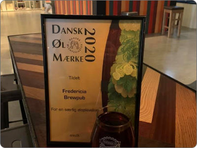